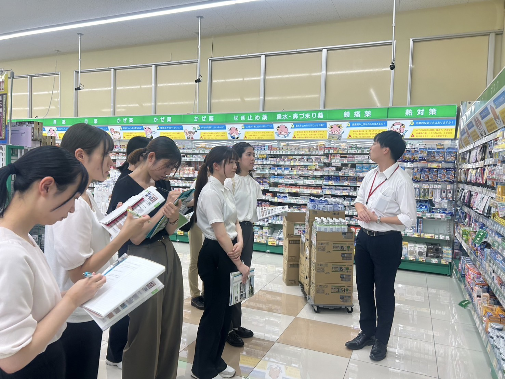
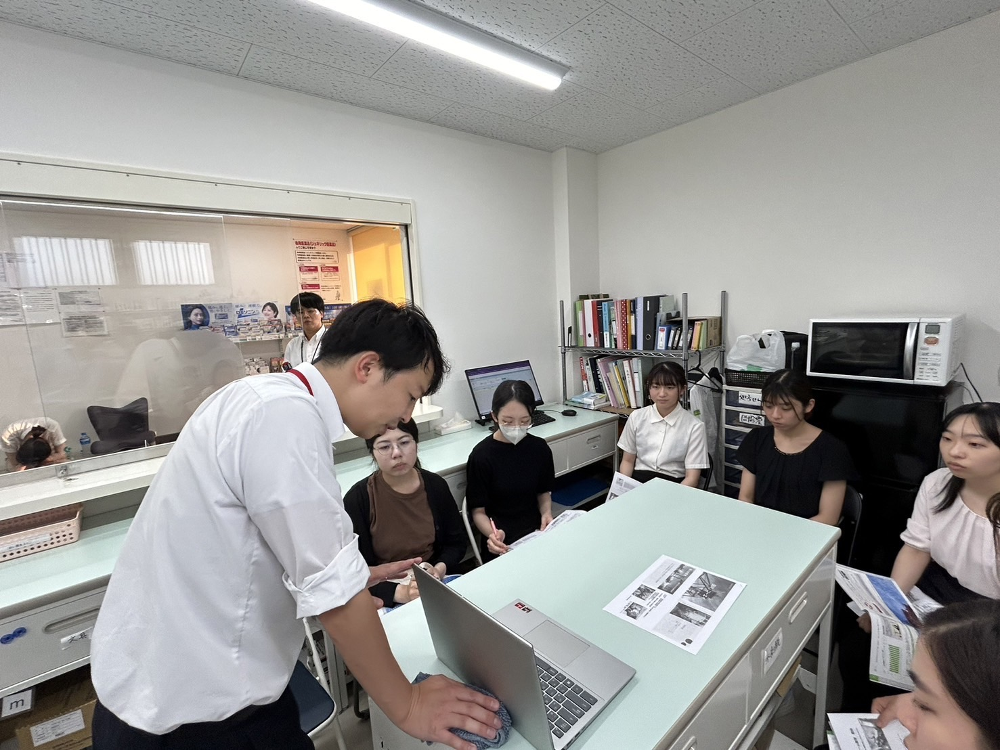

ドラッグコーエイ
9月5日にドラッグコーエイに行きました！コーエイでは子供が見てもわかるような言葉で、症状ごとに薬をまとめていて、誰もが見やすい配置になっていました。日用品なども多く、種類も豊富で、プライベートブランドも充実しています。調剤薬局併設のおおとう桜街道店は、薬局に処方箋をあずけて、その間に買い物ができるのでとても便利だと感じました！処方箋なしの患者さんからの健康相談も多いそうなので、気になることを気軽に聞くことができます！ドラッグストアだけでなく、宅配弁当の業務も行っているので、お弁当も食べてみたいと思いました！
 